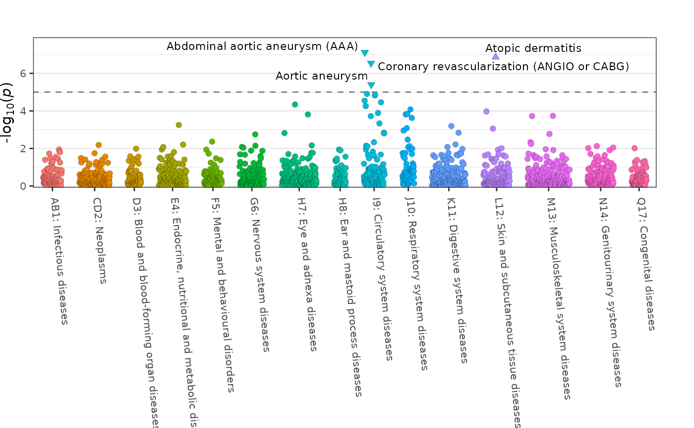

fig_phewas creates a plot visualising results from
phenome-wide association studies (PheWAS).
Usage
fig_phewas(
data,
groups = NULL,
colours = NULL,
interactive = FALSE,
thresh = 1e-05,
thresh_size = 0.5,
trunc = 1e-30,
point_size = 2,
group_dist = 0.05,
x_labels = TRUE,
label_top = TRUE,
label_thresh = 1e-05,
label_n = NULL,
label_size = 3,
label_ymax = 1e-05,
label_box = FALSE,
label_nudge_x = 0,
label_nudge_y = 0,
title = NULL,
title_size = NULL,
title_center = FALSE,
axis_text_size = NULL,
axis_text_angle = -60,
axis_title_size = NULL,
legend = FALSE,
legend_title = "Group",
legend_text_size = NULL,
legend_title_size = NULL,
legend_point_size = NULL,
legend_spacing_size = NULL,
limit_padding = 20,
plot_width = 9,
plot_height = 6,
girafe = TRUE
)Arguments
- data
a
data.framecontaining the association statistics for each phenotype with the following columns:pvaluethe association p-value for each phenotypesignthe direction of the association with the phenotype, where0= missing,1positive association,-1negative associationgroupthe phenotype group for each phenotypelabelthe optional point labelling variable (e.g. phenotype name), iflabel = ""for a point then no label is presented for that pointtextthe optional hover text variable for interactive plots to display further information, iftext = ""for a point then no hover text is presented for that point
- groups
a
charactervectorof groups describing the grouping variable indata(default:NULL)- colours
a
charactervectorof colours corresponding to defined groups (default:NULL)- interactive
a
logicalvalue indicating whether the plot should be interactive (default:FALSE)- thresh
a
numericvalue providing the p-value threshold to be plotted (default:NULL)- thresh_size
a
numericvalue indicating the width of the lines indicating the p-value thresholds (default:0.5)- trunc
a
numericvalue representing the maximum p-value for which results are displayed (default:1e-30)- point_size
a
numericvalue indicating the size of each point (default:2)- group_dist
a
numericvalue indicating the gap between different groups (default:0.05)- x_labels
a
logicalvalue whether the x-axis should be labelled (default:TRUE)- label_top
a
logicalvalue whether the top associated points should be labelled (default:TRUE)- label_thresh
a
numericvalue providing a p-value threshold for labelling points (default:1e-5)- label_n
an
integervalue providing a limit on the number of top associations to label (default:NULL)- label_size
a
numericvalue indicating the size of each label (default:3)- label_ymax
a
numericvalue indicating the p-value threshold for the maximum y-axis value at which labels can be displayed (default:1e-5)- label_box
a
logicalvalue indicating whether labels should be surrounded by a box (default:FALSE)- label_nudge_x
a
numericvalue indicating the degree to which label placement on the x-axis should be adjusted (default:0)- label_nudge_y
a
numericvalue indicating the degree to which label placement on the y-axis should be adjusted (default:0)`- title
a
characterstring providing a title for the plot (default:NULL)- title_size
a
numericvalue indicating the size of the title text for the plot (default:NULL)- title_center
a
logicalvalue indicating whether the plot title should be centered (default:FALSE)- axis_text_size
a
numericvalue indicating the size of the axis text for the plot (default:NULL)- axis_text_angle
a
numericvalue indicating the angle of the text on the x-axis of the plot (default:-60)`- axis_title_size
a
numericvalue indicating the size of the axis title text for the plot (default:NULL)- legend
a
logicalvalue indicating whether a legend corresponding to the displayed groups should be included (default:FALSE)- legend_title
a
characterstring providing a title for the legend (default:"Group")- legend_text_size
a
numericvalue indicating the size of the legend text (default:NULL)- legend_title_size
a
numericvalue indicating the size of the legend title (default:NULL)- legend_point_size
a
numericvalue indicating the size of each point within the legend (default:NULL)- legend_spacing_size
a
numericvalue indicating spacing of points present in the legend (default:NULL)- limit_padding
a
numericvalue indicating the relative distance of plotted points from x-axis extremes (default:20)- plot_width
a
numericvalue indicating the width of the PheWAS plot (default:9)- plot_height
a
numericvalue indicating the height of the PheWAS plot (default:6)- girafe
a
logicalvalue indicating whether an interactive plot should be turned into an interactive graphic using girafe() (default =TRUE)
Details
This plotting function visualises results from phenome-wide
association studies (PheWAS) in the form of a Manhattan style plot.
Associations are grouped into phenotype categories. By default the
results are truncated using a p-value cut-off of 1e-30.
Author
James Staley jrstaley95@gmail.com
Examples
fig_phewas(
data = geni.plots::geni_test_phewas,
axis_text_angle = -85,
axis_text_size = 8
)
